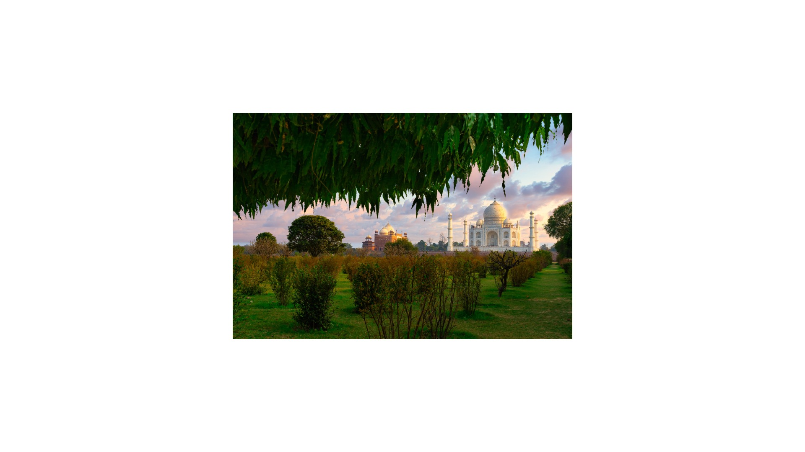

Overview
Mehtab Bagh, the Moonlight Garden, lies across the Yamuna directly opposite the Taj Mahal. It is one of a series of Mughal riverside gardens begun under Babur in the sixteenth century, and it was restored by the Archaeological Survey of India in the 1990s.
From its terrace the Taj appears across the water, with fewer crowds than at the monument itself. The view is especially beautiful at sunset.
What to look for
- The Taj Mahal reflected across the river at sunset
- The garden terrace and its pavilions
- The riverbank and its birds
Visiting tips
- It is usually open on Fridays, when the Taj itself is closed.
- Go about an hour before sunset for the best light and a quiet visit.
- It is a good first visit after you arrive in Agra.
Why visit with a private guide
A private guide shows you where to stand, when to arrive and what most visitors miss at Mehtab Bagh, and fits the visit around the rest of your day.
More photographs


Nearby
Agra Fort Itimad-ud-Daulah (Baby Taj) Taj Mahal Buland Darwaza Akbar's Tomb Prem Mandir Salim Chishti Tomb
Tell me your dates and interests
I will personally prepare an itinerary and quotation within 24 hours. No groups, no fixed scripts.